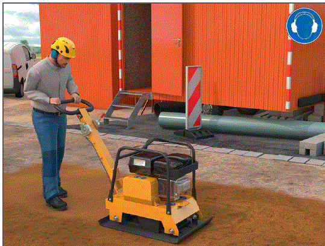

Lärm
auf Baustellen und in Werkstätten/-hallen
|
|

Gefährdungen
- Lärmgefährdungen auf der Baustelle gehen von lärmintensiven und ungünstig platzierten Arbeitsmitteln, von lärmintensiven Baugeräten und Baumaschinen, von akustisch ungeeigneten Arbeitsverfahren sowie von den Arbeiten anderer am Bau beteiligter Unternehmen aus.
- Verkehrslärmemissionen an Straßen- und Schienenbau stellen wirken zusätzlich.
- In Werkstätten/-hallen entstehen weitere Lärmgefährdungen durch die Erhöhung des Gesamtschallpegels, der durch Reflexionen an den Raumbegrenzungsflächen hervorgerufen wird.
- Parallele Arbeitsplätze oder Arbeitsbereiche beeinflussen die unmittelbaren Nachbararbeitsplätze.
Allgemeines
- Baustellen sind zeitlich begrenzte mobile Arbeitsplätze sowohl im Freien als auch in geschlossenen/ teilgeschlossenen Räumen. In Werkstätten/-hallen befinden sich stationäre Arbeitsplätze, die in Einzelarbeitsplätzen und/oder Arbeitsbereiche gegliedert sind.
- Arbeitsverfahren, die ein Stemmen, Schneiden, Schleifen, Brechen, Bohren, Schrauben, Schießen, Verdichten, Schlagen, Flämmen oder Strahlen erfordern, sind als lärmexponiert zu beurteilen. Die Höhe der Schalldruckpegel hängt dabei von den zu bearbeitenden Werkstoffen und Arbeitsverfahren ab.
- Identische Arbeitsverfahren erzeugen an Arbeitsplätzen mit reflektierenden Raumbegrenzungsflächen höhere Schalldruckpegel als im Freien. Hierbei können Pegelüberhöhungen von bis zu 8 dB(A) auftreten.
Schutzmaßnahmen
- Mittels einer Gefährdungsbeurteilung ist die Lärmexposition am Arbeitsplatz zu ermitteln und zu beurteilen sowie bei Überschreitung der oberen Auslösewerte ein Lärmminderungsprogramm festzulegen.
- Technische Maßnahmen sind vorrangig vor organisatorischen Maßnahmen und diese wiederum vorrangig vor persönlichen Maßnahmen einzuleiten.
Technische Schutzmaßnahmen
- Verwendung von schallreduzierten Arbeitsmitteln,
- Auswahl von lärmarmen Arbeitsverfahren,
- Schallschutzkapseln für Maschinen,
- Raumakustische Regulierung: Werkstätten/-hallen mit schallabsorbierenden Maßnahmen an Decken und wenn erforderlich auch an Wänden
 .
.
Organisatorische Schutzmaßnahmen
- Kennzeichnung von Lärmbereichen,
- Trennung der Schallquelle bzw. des Lärmarbeitsplatzes zur Baustelle durch mobile Schallschutz-Wände oder mobile Schallschutz-Kapseln,
- Einweisung und Unterweisung von Beschäftigten (Arbeitszeitregelungen, Arbeitsplatzkoordination, Entfernung zur Schallquelle, maximale Aufenthaltsdauer).
Persönliche Schutzmaßnahmen
- Auswahl von geeignetem Gehörschutz.
Zusätzliche Hinweise
- Bei lärmmindernden Maßnahmen in Werkstätten/-hallen gilt der Stand der Technik als erfüllt wenn:
- in den Oktavmittenfrequenzen von 500 Hz bis 4000 Hz mindestens ein mittlerer Schallabsorptionsgrad von α = 0,3 erreicht ist (eignet sich für kleine bis mittelgroße Räume),
- die Schallpegelabnahme pro Abstandsverdoppelung Δ L im Abstandsbereich von 0,75 bis 6 m in den Oktavmittenfrequenzen von 500 bis 4000 Hz mindestens 4 dB beträgt.
- Als geeignete Schallabsorber für Decken und Wände gelten Produkte bzw. Konstruktionen, die einen Schallabsorptionsgrad von α = 0,9 – 1,0 in den Oktavmittenfrequenzen von 500 Hz bis 4000 Hz aufweisen.
- Mobile oder stationäre Schallschutzwände sollten beidseitig schallabsorbierend und mittig mit einem schalldämmenden Stahlblech ausgestattet sein, damit durch die verwendeten Schallschutzwände keine zusätzlichen Reflexionen ausgehen.
Arbeitsmedizinische Vorsorge
- Arbeitsmedizinische Vorsorge nach Ergebnis der Gefährdungsbeurteilung veranlassen (Pflichtvorsorge) oder anbieten (Angebotsvorsorge). Hierzu Beratung durch den Betriebsarzt.
Beschäftigungseinschränkung
- Schwangere Beschäftigte dürfen ab einem Tageslärmexpositionspegel > 80 dB(A) nicht mehr beschäftigt werden.
07/2021